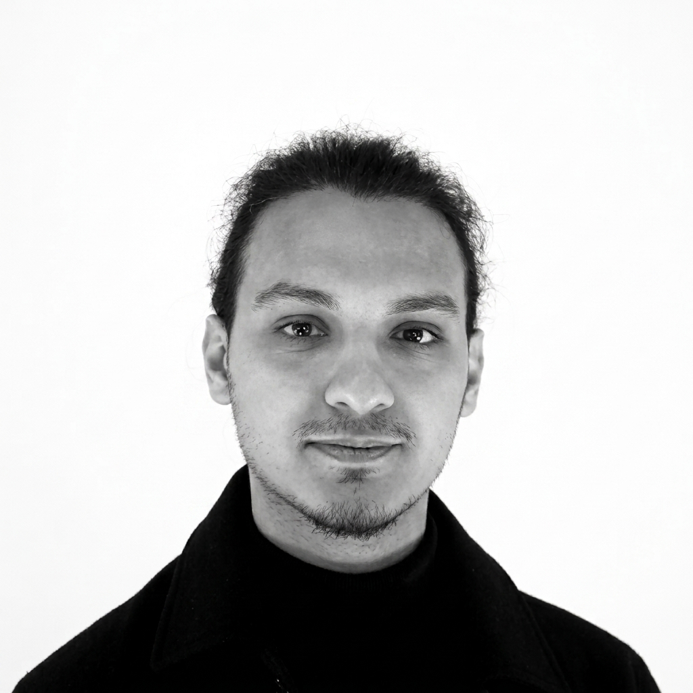
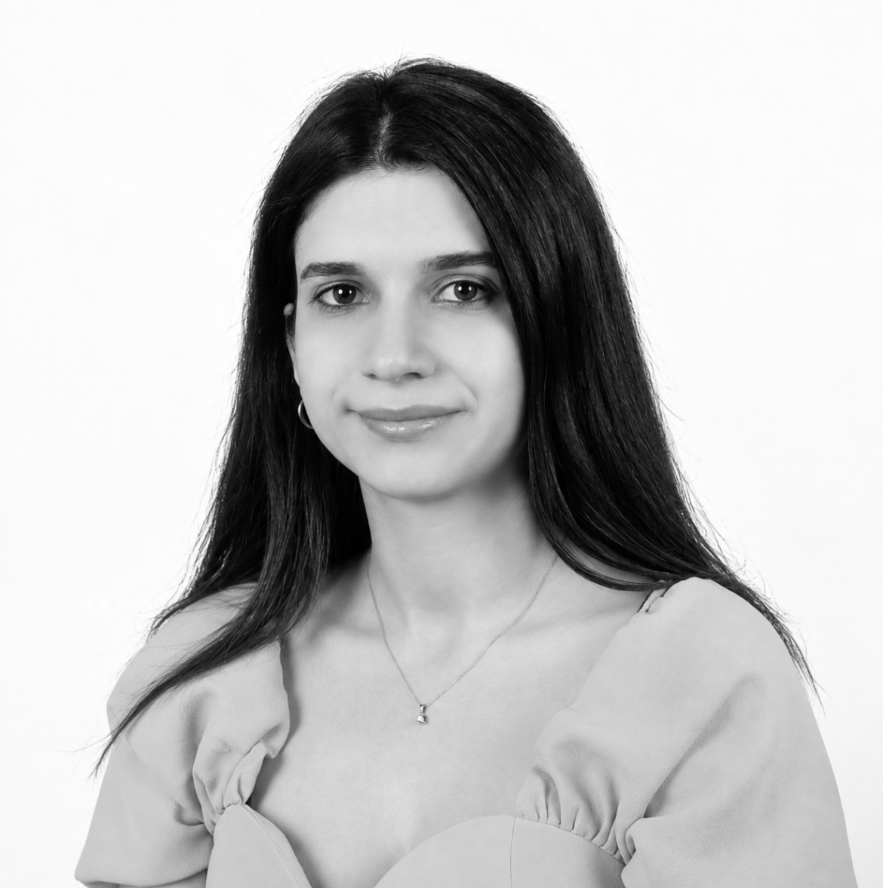

eodo is an independent architectural and design practice operating across Istanbul and Paris, founded by Emre Eren Özaşık and Öykü Çimoğlu. The practice engages in architectural design, urban research, and multidisciplinary spatial productions, focusing on material assemblies, timber construction technologies, and the adaptive reuse of heritage structures.
Approaching design through a rigorous contextual and conceptual framework, eodo balances local geographical narratives with contemporary urban demands.

Emre Eren Özaşık
// Co-Founder, Istanbul
He graduated from Yıldız Technical University with a degree in Architecture. He views spatial practice as an exploration driven by context, material, and spatial experience. His approach is shaped by an ongoing inquiry into how space interacts with its users and environment. Throughout his academic and professional practice, he has collaborated within multidisciplinary teams on national and international architectural competitions, earning various recognitions. He continues to engage in diverse project environments that encourage collaborative thinking. This emphasis on collective production remains a core element of his design methodology. His work focuses on solutions rooted in their local geography, creating sustainable spaces defined by a strong sense of belonging.

Zehra Öykü Çimoğlu
// Co-Founder, Paris
She graduated from Kadir Has University with a degree in Architecture and pursued her master's studies at École nationale supérieure d'architecture de Paris-La Villette. She views spatial practice as an exploration driven by context, material, and spatial experience. Throughout her academic and professional practice, she has collaborated with various architectural firms based in Turkey and France, contributing to diverse design projects and competitions. This emphasis on collective production remains a core element of her design methodology. Her work focuses on solutions rooted in their local geography, creating sustainable spaces defined by a strong sense of belonging.
Our Collaborations
Aleyna İnal · Doğa Döngel · Büşra Karamehmetoğlu · Serhat Oğuz Döngel · Sadık Metin Okay